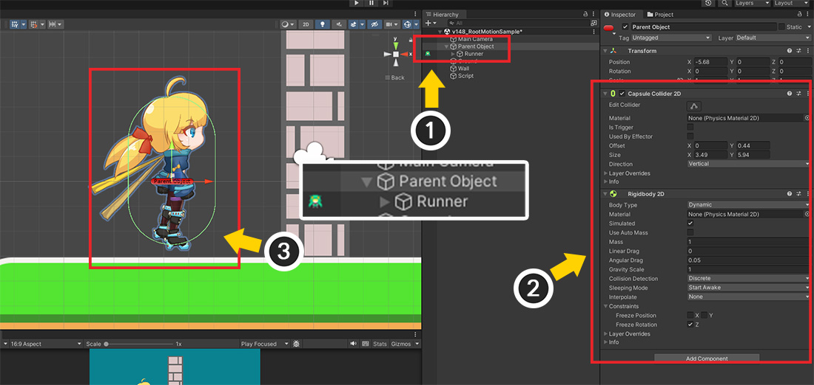
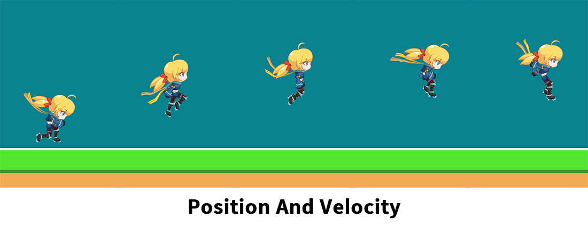

AnyPortrait > 메뉴얼 > 루트 모션
루트 모션
1.4.8
본에 의한 스켈레탈 애니메이션을 만들때, 캐릭터를 시작 위치로부터 이동시키곤 합니다.
애니메이션에서는 캐릭터가 이동을 했지만, 실제로 GameObject가 이동하는 것은 아니므로 게임 상에서 다소 어색할 수 있습니다.
캐릭터가 애니메이션에 의해서 보여지는 위치와 실제 위치가 다르기 때문에 캐릭터가 벽을 뚷고 넘어가는 등의 문제가 발생합니다.
이 페이지에서는 이 문제를 해결하기 위한 기능인 "루트 모션 (Root Motion)"에 대해서 다룹니다.
문제 상황과 해결 방법, 그리고 옵션들을 소개합니다.
참고
- 루트 모션은 본을 기준으로 동작하기 때문에, 본이 없는 캐릭터에는 적용할 수 없습니다.
- 이 페이지에서는 "Rigidbody 2D"를 이용하여 설명을 했지만, 3D 물리 엔진의 "Rigidbody"를 사용하거나 물리 엔진을 아예 사용하지 않는 경우에도 이용할 수 있습니다.
루트 모션이 필요한 상황

AnyPortrait 패키지에서 제공되는 "Runner" 데모의 캐릭터를 이용하여 루트 모션이 필요한 상황을 재현해봅시다.
캐릭터가 중심으로부터 오른쪽으로 이동하는 애니메이션을 새로 제작해보았습니다.

애니메이션이 재생되면 캐릭터는 오른쪽으로 도약을 합니다.
일반적으로 중심에서 크게 벗어나지 않게 캐릭터 애니메이션을 만드는 것과는 다른 것을 알 수 있습니다.
이제 이 애니메이션을 유니티 씬에서 재생을 해 봅시다.
루트 모션이 필요한 대표적인 상황은 "물리 기능"을 같이 이용했을 때 입니다.
유니티의 2D 물리를 이용하는 씬을 구성해봅시다.
(1) 앞서 제작한 캐릭터를 씬에 배치합니다.
(2) 씬에 캐릭터를 포함하여 몇개의 스프라이트를 배치합니다.
(3) 캐릭터와 스프라이트에 Rigidbody 2D, Collider 2D 컴포넌트 등을 추가했습니다.
게임을 실행했을 때 물리 컴포넌트에 의해서 캐릭터는 벽을 넘어갈 수 없어야 할 것입니다.
게임을 실행하고 앞서 제작한 애니메이션을 재생해보았습니다.
물리 컴포넌트에 관계없이 캐릭터가 벽을 뚫고 맞은편으로 이동해버립니다.

이 상태를 씬 뷰에서 확인해봅시다.
(1) Rigidbody 2D와 Collider 2D가 추가된 객체는 벽의 왼쪽에 위치한 상태입니다. 즉, GameObject는 움직이지 않은 상태입니다.
(2) 하지만 오른쪽으로 이동하는 애니메이션에 의해 캐릭터가 마치 벽을 넘어간 것처럼 보여지는 것입니다.
루트 모션을 이용하여 문제 해결하기
이 문제는 실제로 보여지는 캐릭터의 위치와 캐릭터의 GameObject의 위치가 크게 차이가 나서 발생합니다.
따라서 이 문제를 해결하기 위해서는 "캐릭터의 위치"와 "GameObject의 위치"가 같도록 만들어야 합니다.
이 위치 동기화 과정을 "루트 모션 (Root Motion)"이라고 합니다.
"루트 모션"을 적용하기 위해서는 다음의 조건들이 충족되어야 합니다.
(1) 루트 모션용 본 지정하기
캐릭터의 위치를 의미하는 본을 루트 유닛이 되는 메시 그룹당 하나씩 지정해야합니다.
해당 본은 부모 본을 가지지 않은 루트 본 (Root Bone)이어야 합니다.
(2) apPortrait의 객체가 부모 GameObject에 속하게 만들기
"캐릭터" 단위가 apPortrait가 아닌 apPortrait의 부모 GameObject부터 시작되어야 합니다.
위치를 보정하는 기준이 부모 GameObject이기 때문입니다.
먼저, "캐릭터의 보여지는 위치"를 의미하는 "루트 모션을 위한 본"을 지정해봅시다.
(1) 메시 그룹을 선택합니다. 이 메시 그룹은 루트 유닛으로 등록되는 메시 그룹이어야 합니다.
(2) Bone 탭을 선택한 후, 캐릭터의 중심이 되는 본을 선택합니다. 여기서는 "Pelvis" 본을 선택했습니다. 해당 본은 부모 본을 가지지 않는 루트 본이어야 합니다.
(3) Root Motion 버튼을 눌러서 활성화합니다.
이 작업은 루트 유닛이 되는 모든 메시 그룹에 대해서 동일하게 수행되어야 합니다.

(1) Bake 버튼을 누릅니다.
(2) Setting 탭을 누릅니다.
(3) Root Motion Options에서 Root Motion Method의 값을 Move Parent Transform으로 변경합니다.
Root Motion Method 옵션의 값은 각각 다음과 같습니다.
- None : 루트 모션을 비활성화합니다.
- Lock to Center : 캐릭터가 항상 부모 GameObject의 중심에 위치하도록 고정합니다.
- Move Parent Transform : 캐릭터를 부모 GameObject의 중심에 고정하고, 부모 GameObject의 Transform을 애니메이션에 따라 대신 이동시킵니다.
루트 모션 옵션을 활성화하면 위와 같이 추가적인 옵션들이 나타납니다.
위와 같이 설정을 한 후 Bake를 실행합니다.
세부 옵션들은 다음과 같습니다.
- Options Per Axis : 루트 모션을 X, Y 축마다 다르게 설정할 수 있습니다. 루트 모션 기능이 "위치"만 제어할지, 또는 "위치와 Rigidbody의 속도"를 모두 제어할 지를 결정할 수 있습니다. X나 Y축 중 하나에만 루트 모션을 적용할 수도 있습니다.
- Parent Transform Type : 루트 모션의 방식이 "Move Parent Transform"인 경우, apPortrait의 부모 GameObject를 대상으로 이동을 시키는데, 이때 조건에 맞는 다른 GameObject를 대상으로 삼는 것이 가능합니다.

유니티 씬으로 가서, 씬 구성을 루트 모션에 맞게 수정해봅시다.
(1) AnyPortrait로 제작된 캐릭터가 부모 GameObject에 속하도록 구성합니다.
(2) 물리 컴포넌트 (Rigidbody 2D, Collider 2D)를 AnyPortrait로 제작된 캐릭터가 아닌 부모 GameObject에 추가합니다.
(3) 위치를 잘 조정하여 위와 같이 하나의 캐릭터처럼 동작하도록 만듭니다.

이제 게임을 실행하고 애니메이션을 재생해봅시다.
애니메이션에 의해 캐릭터가 이동을 하면, 부모 GameObject가 실제로 같이 이동하게 되며, 물리 컴포넌트에 의해 벽을 넘지 못하고 자연스럽게 충돌하는 것을 볼 수 있습니다.
위와 같이 "루트 모션"을 이용하면 캐릭터 애니메이션과 GameObject의 위치를 동기화하여 문제를 해결할 수 있습니다.
루트 모션 동작 원리
루트 모션은 Unity를 포함한 여러 게임 엔진에서 지원하는 기능입니다.
AnyPortrait의 경우엔 어떤 과정을 통해서 루트 모션이 동작하는지 보여드리겠습니다.

AnyPortrait는 별도의 "부모 GameObject"를 이용하여 루트 모션이 동작합니다.
부모-자식 관계의 두개의 GameObject의 위치를 제어하는 것이 루트 모션의 핵심입니다.
루트 모션이 동작하는 과정을 보여주는 이미지입니다.
"부모 GameObject의 위치(위의 파란색 기즈모)"와 "캐릭터의 위치(아래의 녹색 기즈모)"가 어떻게 동기화되는지 순서대로 확인해봅시다.
(녹색 기즈모는 apPortrait의 Transform 위치가 아닌 루트 모션용 본의 위치를 의미합니다.)
(1) 씬에서 구성된 기본 상태입니다.
애니메이션이 재생되지 않는다면, 캐릭터는 부모와 함께 마치 "하나의 오브젝트"인 것 처럼 배치되어 동작할 것입니다.
(2) 애니메이션이 재생된 직후의 상태입니다.
캐릭터가 애니메이션에 의해 이동하게 되면 부모 GameObject의 위치와 차이가 발생합니다.
이 페이지의 앞부분에서 소개한 문제가 바로 이 단계입니다.
(3) 루트 모션이 적용되는 첫 단계인 "Lock to Center"입니다.
이 단계는 루트 모션용으로 지정된 루트 본이 부모 GameObject의 중심에 위치하도록 애니메이션의 반대 방향으로 캐릭터를 이동시킵니다.
이 과정을 거치면 다시 캐릭터와 부모 GameObject의 위치는 동일해집니다.
(4) 루트 모션의 다음 단계인 "Move Parent Transform"입니다.
애니메이션에 의해 루트 본이 이동해야하는 변위만큼 캐릭터가 아닌 부모 GameObject의 Transform을 이동시키는 것입니다.
이 단계까지 수행되면 루트 모션이 완벽하게 적용됩니다.
Lock to Center
Root Motion Method의 옵션 중, 앞서 소개한 "Move Parent Transform"이 아닌 "Lock to Center"로 설정을 하면 어떻게 동작하는지 확인해봅시다.

(1) Bake 다이얼로그를 엽니다.
(2) Root Motion Method의 값을 "Lock to Center"로 설정합니다.

Bake를 실행하고 게임을 실행하면 위와 같이 캐릭터가 배치된 위치에서 아예 움직이지 않는 것을 볼 수 있습니다.
축마다 다른 옵션 적용하기
루트 모션을 X, Y축에 따라 다르게 적용하는 것이 가능합니다.
특정 축에만 루트 모션을 적용할 수도 있고, 동작 방식을 서로 다르게 설정할 수도 있습니다.

X, Y 축별로 루트 모션이 다르게 동작하는 결과를 보기 위해서 애니메이션을 위와 같이 수정해보았습니다.
캐릭터가 X축, Y축으로 큰 폭으로 움직이므로 각각의 결과를 비교하기 좋을 것입니다.

루트 모션의 옵션 항목 중에서 "Options Per Axis"를 보면 X, Y축 별로 각각 옵션을 지정할 수 있습니다.
설정할 수 있는 옵션 값은 다음과 같습니다.
- Disabled : 해당 축에서는 루트 모션을 적용하지 않습니다.
- Position Only : 해당 축에 루트 모션을 적용합니다. "Move Parent Transform" 방식인 경우, "위치" 값만 제어합니다.
- Position And Velocity : 해당 축에 루트 모션을 적용합니다. "Move Parent Transform" 방식인 경우, "위치"값을 제어함과 동시에 "속도 보정" 처리가 추가됩니다.
이제 축별로 다르게 옵션을 적용하여 결과를 확인해봅시다.
(루트 모션을 적용하기 위해서는 "Position Only" 또는 "Position And Velocity"로 설정하면 됩니다. 두 옵션의 차이는 아래에서 설명합니다.)

위 결과는 "X축에만 루트 모션을 적용"한 결과입니다.
캐릭터와 부모 GameObject가 같이 오른쪽으로 이동하면서 물리 충돌이 발생하는 것을 볼 수 있습니다.
하지만 캐릭터의 Y축 위치는 부모 GameObject의 Y 위치와 독립적으로 움직이는 것을 볼 수 있습니다.
결과적으로 부모 GameObject는 애니메이션에 의해서 오직 X축으로만 이동하게 된 것입니다.
반대로, 이번엔 "Y축에만 루트 모션을 적용"한 결과입니다.
캐릭터와 부모 GameObject의 Y 위치가 동기화되어 위아래로 움직이는 것을 볼 수 있습니다.
하지만 캐릭터의 X 위치는 부모 GameObject와 떨어져서 혼자 움직이므로 벽을 통과해버렸습니다.
어떤 축에 적용하느냐에 따라 결과가 크게 바뀌는 것을 볼 수 있습니다.
쉽게 생각하면, 모든 축에 루트 모션을 적용하는 것이 가장 좋아보이지만, "중력"이 적용되는 물리 엔진의 특성을 고려하면 X축에만 루트 모션을 적용하는 것이 좋은 접근법일 수도 있습니다.
사용하는 물리 기능, 게임의 로직, 애니메이션 제작 방식 등에 따라 적절하게 옵션을 설정해보세요.
Position Only와 Position And Velocity
축별로 루트 모션을 적용하는 옵션 중에는 "Position Only"와 "Position And Velocity"가 있습니다.
이들 옵션 모두 루트 모션을 적용하는 것이며, 기본적으로 동일한 작동 방식을 가집니다.
하지만 "물리 엔진 (2D/3D)"을 이용하는 경우 이 두개의 옵션은 조금 다르게 동작합니다.
이름에서 볼 수 있듯이, "속도" 처리에 있어서 차이가 발생하는 것입니다.

이 옵션의 차이를 가장 쉽게 비교하는 방법은 "중력"을 이용하는 것입니다.
애니메이션이 위와 같이 위쪽으로 움직인다면, 애니메이션 상에서의 캐릭터의 이동 방향(위)과 중력에 의한 물리적인 이동 방향(아래)이 서로 반대가 됩니다.
Options Per Axis의 Y-axis Option의 값을 "Position Only"와 "Position And Velocity"로 각각 설정해보면서 결과를 비교해봅시다.
(유니티 2D 물리 엔진의 Rigidbody 2D를 이용했습니다.)

비교하기에 앞서서, 물리 엔진이 적용되지 않았을 때의 루트 모션의 결과입니다.
애니메이션에 의해 캐릭터가 꽤 높이 올라가는 것을 볼 수 있습니다.
이제 물리 엔진을 켜고 각각의 옵션에서 궤적이 어떻게 바뀌는지 확인해봅시다.

"Position Only"로 설정한 결과입니다.
캐릭터가 위로 올라가는 모션 도중에 아래로 금방 떨어지는 것을 볼 수 있습니다.
"Position Only" 옵션은 Rigidbody의 "위치"를 제어하지만 "속도"는 제어하지 않습니다.
따라서 루트 모션에 의해 위로 이동함에도 불구하고, "중력에 의한 아래로의 속도"만 계산되어 캐릭터는 빠르게 떨어지는 것입니다.

이번엔 "Position And Velocity"로 설정한 결과입니다.
캐릭터의 궤적이 조금 더 높아진 것을 볼 수 있습니다.
"Position And Velocity" 옵션은 Rigidbody의 "위치"와 "속도"를 모두 제어하기 때문에 궤적의 차이가 발생한 것입니다.
중력이 적용되기 때문에 애니메이션에서 지정된 만큼 높이 올라가지는 않지만, "Position Only" 방식보다는 애니메이션의 궤적을 어느정도 잘 재현하고 있습니다.
다만, 이 옵션이 "속도"를 애니메이션을 기준으로만 제어하는 것은 아닙니다.
이 옵션은 루트 모션에 의한 위치 이동과 Rigidbody의 속도가 아주 크게 차이가 나는 경우에만 약간의 보정 작업을 수행합니다.
따라서 "물리 엔진에 의한 움직임"과 "애니메이션에 의한 움직임"이 합해진 결과를 볼 수 있습니다.
다른 GameObject를 루트 모션의 대상으로 지정하기
루트 모션의 방식을 Move Parent Transform으로 설정하면, 애니메이션에 의한 움직임을 부모 GameObject에 전달하여 대신 움직이게 만듭니다.
이때, apPortrait의 GameObject의 부모 GameObject가 아니라 다른 GameObject를 대상으로 지정하는 것이 가능합니다.
참고
지정 가능한 GameObject는 apPortrait의 GameObject의 부모-자식 관계로 연쇄적으로 연결되어야 합니다.

(1) 씬 구성을 위와 같이 수정했습니다.
AnyPortrait로 제작된 캐릭터 ("Runner")가 새로운 GameObject인 "Parent 2"의 연쇄적으로 자식 객체가 되도록 설정했습니다. ("Parent 2 > Parent Object > Runner")
만약 "Parent 2"를 캐릭터 단위로서 제어하고자 한다면, 루트 모션의 대상을 "Parent 2"로 변경해야할 것입니다.
(루트 모션의 기본값은 바로 위의 부모 GameObject인 "Parent Object"를 대상으로 합니다.)

(1) Bake 다이얼로그에서 Parent Transform Type의 값을 Specified Transform으로 설정합니다.

(1) 루트 모션의 대상을 설정하는 옵션이 나타납니다.
(2) Change 버튼을 누릅니다.
(3) 지정 가능한 GameObject의 Transform들이 나타납니다. "Parent 2"를 선택하고 Select 버튼을 누릅니다.
이제 루트 모션의 움직임은 변경된 Transform에 적용됩니다.
Inspector에서 루트 모션 옵션 설정하기

루트 모션은 Bake 다이얼로그 뿐만 아니라 Inspector에서도 설정할 수 있습니다.
(1) 유니티 씬에서 AnyPortrait로 제작된 캐릭터를 선택합니다.
(2) 기본 설정 탭을 선택합니다.
(3) 루트 모션 옵션들을 Inspector에서도 볼 수 있습니다.
- 3D 물리 엔진 상에서 동작하는 경우, X 축 옵션이 X, Z축 움직임을 결정합니다.
- 루트 모션에 의한 움직임은 애니메이션의 위치 변화를 감지하여 동작하므로, 애니메이션의 "첫 프레임"에서는 위치 이동이 발생하지 않습니다.
- 부모 GameObject에 추가된 컴포넌트 (Rigidbody, Rigidbody2D, Transform)에 따라서 다르게 적용됩니다.
- 2개 이상의 루트 유닛이 존재한다면, 모든 루트 유닛의 메시 그룹에 루트 모션이 설정된 본이 존재해야합니다.
- X, Y축 옵션이 모두 비활성화되면 루트 모션은 동작하지 않습니다.